Análisis Matemático
Integrales de funciones
Universidad CEU San Pablo
Sumas de Riemann
Definición 1 (Partición de un intervalo) Dado un intervalo \(I=[a,b]\) cerrado y acotado en \(\mathbb{R}\), una partición de \(I\) es un conjunto ordenado y finito \(P=\{x_0, x_1, \ldots, x_n\}\) de puntos de \(I\) tales que \(a=x_0<x_1<x_2<\cdots<x_n=b\).
El conjunto de todas las particiones de un intervalo \(I\) se denota \(\mathcal{P}(I)\).
Definición 2 (Suma inferior de Riemann) Dada una función \(f: I\to\mathbb{R}\) acotada en el intervalo \(I=[a,b]\) y una partición \(P=\{x_0, x_1, \ldots, x_n\}\) de \(I\), se define la suma inferior de \(f\) respecto de \(P\), y se denota \(s(f,P)\), como
\[ s(f,P) = \sum_{i=1}^n m_i(x_i-x_{i-1}) \]
donde \(m_i=\inf\{f(x): x\in[x_{i-1},x_i]\}\) para \(i=1,\ldots,n\).
Suma inferior de Riemann
Definición 3 (Suma superior de Riemann) Dada una función \(f: I\to\mathbb{R}\) acotada en el intervalo \(I=[a,b]\) y una partición \(P=\{x_0, x_1, \ldots, x_n\}\) de \(I\), se define la suma superior de \(f\) respecto de \(P\), y se denota \(S(f,P)\), como
\[ S(f,P) = \sum_{i=1}^n M_i(x_i-x_{i-1}) \]
donde \(M_i=\sup\{f(x): x\in[x_{i-1},x_i]\}\) para \(i=1,\ldots,n\).
Suma superior de Riemann
Obsérvese que si una función es negativa en un intervalo \(I\), sus sumas de Riemann son negativas, ya que las alturas de los rectángulos son negativas.
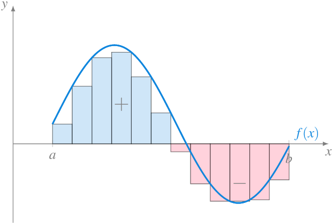
Ejemplo 1 Dada la función \(f(x)=x^2\), si consideramos el intervalo \([0,2]\) y la partición \(P=\{0, 0.5, 1, 1.5, 2\}\), la suma inferior de Riemann de \(f\) correspondiente a esta partición es
\[\begin{align*} s(f,P) &= f(0)(0.5-0) + f(0.5) (1-0.5) + f(1) (1.5-1) + f(1.5) (2-1.5) \tag{1}\\ &= 0\cdot 0.5 + 0.5^2\cdot 0.5 + 1^2 \cdot 0.5 + 1.5^2 \cdot 0.5 = 1.75 \end{align*}\] (1) Como \(f\) es creciente, el ínfimo en cada intervalo se alcanza en el extremo inferior.
Y la suma superior es
\[\begin{align*} s(f,P) &= f(0.5)(0.5-0) + f(1) (1-0.5) + f(1.5) (1.5-1) + f(2) (2-1.5) \tag{2}\\ &= 0.5\cdot 0.5 + 1^2\cdot 0.5 + 1.5^2 \cdot 0.5 + 2^2 \cdot 0.5 = 3.75 \end{align*}\] (2) Como \(f\) es creciente, el supremo en cada intervalo se alcanza en el extremo superior.
Calculadora de sumas de Riemann
Proposición 1 Si \(f:I\to\mathbb{R}\) es una función acotada en el intervalo \(I=[a,b]\) y \(P=\{x_0, x_1, \cdots, x_n\}\) es una partición de \(I\), entonces \(s(f,P)\leq S(f,P)\).
Definición 4 (Refinamiento de una partición) Dadas dos particiones \(P=\{x_0, x_1, \ldots, x_n\}\) y \(Q=\{y_0, y_1, \ldots, y_m\}\) de un intervalo \(I=[a,b]\), se dice que \(Q\) es un refinamiento de \(P\) si todos los puntos de \(P\) están en \(Q\), es decir, \(P\subseteq Q\).
Proposición 2 Si \(f:I\to\mathbb{R}\) es una función acotada en el intervalo \(I=[a,b]\), \(P\) es una partición de \(I\) y \(Q\) es un refinamiento de \(P\), entonces
- \(s(f,P)\leq s(f,Q)\)
- \(S(f,Q)\leq S(f,P)\)
Proposición 3 Si \(f:I\to\mathbb{R}\) es una función acotada en el intervalo \(I=[a,b]\) y \(P\) y \(Q\) son dos particiones de \(I\), entonces \(s(f,P)\leq S(f,Q)\) y \(s(f,Q)\leq S(f,P)\).
Integrales de Riemann
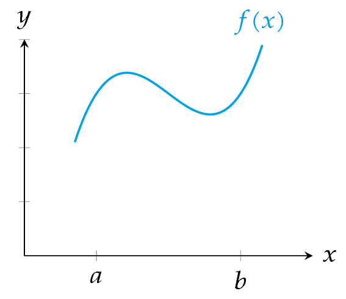Aproximación del area encerrada entre la gráfica de una función y el eje \(x\) mediante sumas de Riemann.
Definición 5 (Integral inferior de Riemann) Dada una función \(f:I\to\mathbb{R}\) acotada en el intervalo \(I=[a,b]\), se define la integral inferior de \(f\) en \(I\) como el número \(\underline{\int_a^b} f =\sup\{s(f,P): P\in \mathcal{P}(I)\}\).
Definición 6 (Integral superior de Riemann) Dada una función \(f:I\to\mathbb{R}\) acotada en el intervalo \(I=[a,b]\), se define la integral superior de \(f\) en \(I\) como el número \(\overline{\int_a^b} f =\inf\{S(f,P): P\in \mathcal{P}(I)\}\).
Proposición 4 Si \(f:I\to\mathbb{R}\) es una función acotada en el intervalo \(I=[a,b]\), entonces \(\underline{\int_a^b} f\leq \overline{\int_a^b}f\).
Definición 7 (Integral de Riemann) Dada una función \(f:I\to\mathbb{R}\) acotada en el intervalo \(I=[a,b]\), se dice que \(f\) es integrable Riemann en \(I\) si
\[ \underline{\int_a^b} f = \overline{\int_a^b}f, \]
y a este valor se le llama integral de Riemann o integral definida de \(f\) en \(I\) y se denota por \(\int_a^b f\), o bien
\[ \int_a^b f(x)\,dx \]
Ejemplo 2 Veamos que si \(f(x)=c\), es una función constante en \(I=[a,b]\), entonces \(f\) es integrable en \(I\).
Sea \(P=\{x_0, x_1, \ldots, x_n\}\) una partición de \([a,b]\), entonces
\[\begin{align*} s(f,P) &= \sum_{i=1}^n m_i(x_i-x_{i-1}) = \sum_{i=1}^n c(x_i-x_{i-1}) \\ &= c\sum_{i=1}^n (x_i-x_{i-1}) = c(x_n-x_0) = c(b-a). \end{align*}\]
Del mismo modo,
\[\begin{align*} S(f,P) &= \sum_{i=1}^n M_i(x_i-x_{i-1}) = \sum_{i=1}^n c(x_i-x_{i-1})\\ & = c\sum_{i=1}^n (x_i-x_{i-1}) = c(x_n-x_0) = c(b-a). \end{align*}\]
Así pues, \(s(f,P) = S(f,P)=c(b-a)\) \(\forall P\in\mathcal{P}(I)\) y \(\int_a^b f(x)\,dx = c(b-a)\).
:::{#exm-sumas-riemann-2}{.scrollable} Veamos que \(f(x)=x\) es integrable en \([0,1]\).
Sea \(P_n=\{0, \frac{1}{n}, \frac{2}{n}, \ldots, \frac{n}{n}\}\) una partición de \([0,1]\). Vamos a probar primero que \(\sup\{s(f,P_n):n\in\mathbb{N}\} = \inf\{S(f,P_n):n\in\mathbb{N}\}\). Como \(f\) es creciente y continua en \([0,1]\), se cumple que
\[\begin{align*} m_i &= \inf\{f(x): x\in[x_{i-1},x_i]\} = f(x_{i-1}),\\ M_i &= \sup\{f(x): x\in[x_{i-1},x_i]\} = f(x_i), \end{align*}\]
y por tanto,
\[\begin{align*} s(f,P_n) &= \sum_{i=1}^n m_i\left(\frac{i}{n}-\frac{i-1}{n}\right) = \sum_{i=1}^n f\left(\frac{i-1}{n}\right)\frac{1}{n} = \sum_{i=1}^n \frac{i-1}{n}\frac{1}{n}\\ & = \frac{1}{n^2}\sum_{i=1}^n (i-1) =\frac{1}{n^2}\frac{(n-1)n}{2} = \frac{1}{2}\left(1-\frac{1}{n}\right),\\ S(f,P_n) &= \sum_{i=1}^n M_i\left(\frac{i}{n}-\frac{i-1}{n}\right) = \sum_{i=1}^n f\left(\frac{i}{n}\right)\frac{1}{n} = \sum_{i=1}^n \frac{i}{n}\frac{1}{n}\\ & = \frac{1}{n^2}\sum_{i=1}^n i =\frac{1}{n^2}\frac{n(n+1)}{2} = \frac{1}{2}\left(1+\frac{1}{n}\right).\\ \end{align*}\]
Así pues,
\[ \begin{gathered} \sup\{s(f,P_n):n\in\mathbb{N}\} = \sup\left\{\frac{1}{2}\left(1-\frac{1}{n}\right):n\in\mathbb{N}\right\} =\frac{1}{2} \\ = \inf\left\{\frac{1}{2}\left(1+\frac{1}{n}\right):n\in\mathbb{N}\right\} = \inf\{S(f,P_n):n\in\mathbb{N}\} \end{gathered} \]
Ahora bien, como
\[ \begin{gathered} \sup\{s(f,P_n):n\in\mathbb{N}\}\leq \sup\{s(f,P):P\in\mathcal{P}(I)\} = \underline{\int_0^1} f \\ \leq \overline{\int_0^1} f =\inf\{S(f,P):P\in\mathcal{P}(I)\} \leq \inf\{S(f,P_n):n\in\mathbb{N}\} \end{gathered} \]
se puede concluir que \(\underline{\int_0^1} f = \overline{\int_0^1} f\), y por tanto \(\int_0^1 f(x)\, dx = \frac{1}{2}\). :::
Ejemplo 3 La función
\[ f(x) = \begin{cases} 1 & \mbox{si } x\in\mathbb{Q}\cap[0,1]\\ 0 & \mbox{si } x\in\mathbb{R}\setminus\mathbb{Q}\cap[0,1] \end{cases} \]
no es integrable Riemann ya que para cualquier partición \(P=\{x_0, x_1, \ldots, x_n\}\) del intervalo \([0,1]\) se tiene que
\[\begin{align*} m_i &= \inf\{f(x): x\in [x_{i-1},x_i]\} = 0,\\ M_i &= \sup\{f(x): x\in [x_{i-1},x_i]\} = 1, \end{align*}\]
por lo que \(s(f,P)=0\) y \(S(f,P)=1\) \(\forall P\in\mathcal{P}([0,1])\).
Así pues, \(\underline{\int_a^b}f = 0 \neq \overline{\int_a^b}f=1\).
Teorema 1 (Criterio de integrabilidad de Riemann) Una función \(f:I\to\mathbb{R}\) acotada en el intervalo \(I=[a,b]\) es integrable en \(I\) si y sólo si para cada \(\varepsilon>0\) existe una partición \(P\in\mathcal{P}(I)\) tal que \(S(f,P)-s(f,P)<\varepsilon\).
Corolario 1 Dada una función \(f:I\to\mathbb{R}\) acotada en el intervalo \(I=[a,b]\), si existe una sucesión de particiones \((P_n)_{n=1}^\infty\) de \(I\) tal que \(\lim_{n\to\infty} S(f,P_n)-s(f,P_n) =0\), entonces \(f\) es integrable Riemann en \(I\) y
\[ \int_a^b f(x)\,dx = \lim_{n\to\infty} s(f,P_n) = \lim_{n\to\infty} S(f,P_n). \]
Este último resultado nos permite calcular una integral como el límite de las sumas de Riemann tomando una sucesión de particiones cada vez más refinada.
Propiedades de la integral de Riemann
Teorema 2 Si \(f,g:I\to\mathbb{R}\) son dos funciones integrables Riemann en \(I=[a,b]\), entonces
\(f+g\) es integrable Riemann en \(I\) y \(\int_a^b (f+g)(x)\, dx = \int_a^b f(x)\,dx + \int_a^b g(x)\,dx.\)
Para cualquier \(c\in\mathbb{R}\), \(cf\) es integrable Riemann en \(I\) y \(\int_a^b cf(x)\, dx = c\int_a^b f(x)\,dx.\)
Proposición 5 Si \(f:I\to\mathbb{R}\) es una función integrable Riemann en \(I=[a,b]\) y \(f(x)\geq 0\) \(\forall x\in I\), entonces \(\int_a^b f(x)\,dx \geq 0\).
Corolario 2 Si \(f:I\to\mathbb{R}\) es una función integrable Riemann en \(I=[a,b]\) y \(f(x)\leq 0\) \(\forall x\in I\), entonces \(\int_a^b f(x)\,dx \leq 0\).
Este resultado nos advierte de que no se puede utilizar directamente la integral de Riemann para calcular el area entre la gráfica de la función y el eje \(x\) si la función presenta valores negativos en el intervalo de integración \(I\).
En estos casos, el recurso habitual para calcular el área es calcular la integral del valor absoluto de la función.
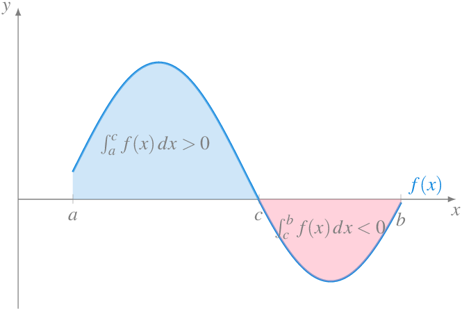
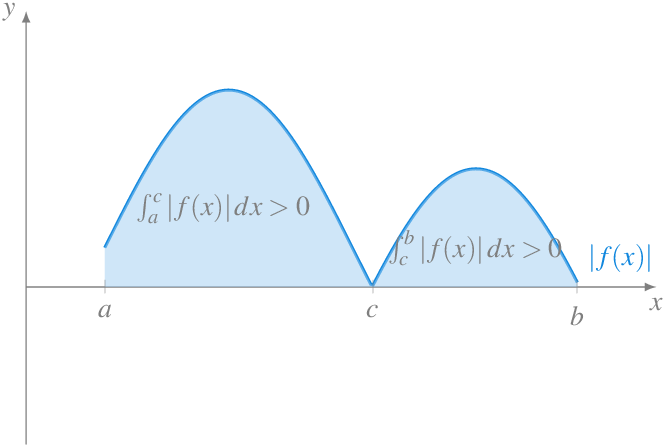
Corolario 3 Si \(f,g:I\to\mathbb{R}\) son dos funciones integrables Riemann en \(I=[a,b]\) y \(f(x)\leq g(x)\) \(\forall x\in I\), entonces \(\int_a^b f(x)\,dx \leq \int_a^b g(x)\,dx\).
Corolario 4 Si \(f:I\to\mathbb{R}\) es una función integrable Riemann en \(I=[a,b]\) y \(m\leq f(x)\leq M\) \(\forall x\in I\), entonces \(m(b-a)\leq \int_a^b f(x)\,dx \leq M(b-a)\).
Teorema 3 (Aditividad de la integral respecto del intervalo de integración) Si \(f:I\to\mathbb{R}\) es una función acotada en \(I=[a,b]\) y \(c\in(a,b)\), entonces \(f\) es integrable Riemann en \(I\) si y sólo si \(f\) es integrable Riemann en \([a,c]\) y \([c,b]\). Además, en este caso,
\[ \int_a^b f(x)\,dx = \int_a^c f(x)\,dx + \int_c^b f(x)\,dx \]
Aditividad de la integral respecto del intervalo de integración
Clase de las funciones integrables
Teorema 4 Si \(f:I\to\mathbb{R}\) es una función acotada y monótona en \(I=[a,b]\), entonces \(f\) es integrable en \(I\).
Teorema 5 Si \(f:I\to\mathbb{R}\) es una función continua en \(I=[a,b]\), entonces \(f\) es integrable en \(I\).
Teorema 6 Si \(f:I\to\mathbb{R}\) es una función continua en \(I=[a,b]\), salvo en un punto \(c\in I\), entonces \(f\) es integrable en \(I\).
Corolario 5 Si \(f:I\to\mathbb{R}\) es una función continua en \(I=[a,b]\), salvo en un conjunto finito de puntos de \(I\), entonces \(f\) es integrable en \(I\).
Teorema 7 Si \(f:I\to\mathbb{R}\) es una función integrable en \(I=[a,b]\) y \(g:J\to\mathbb{R}\) es una función continua en \(J=[c,d]\) con \(f(I)\subseteq J\), entonces \(g\circ f\) es integrable en \(I\).
Corolario 6 Si \(f:I\to\mathbb{R}\) es una función integrable en \(I=[a,b]\), entonces la función \(|f|\) es integrable en \(I\).
Corolario 7 Si \(f:I\to\mathbb{R}\) es una función integrable en \(I=[a,b]\), entonces la función \(f^n\) es integrable en \(I\) para cualquier \(n\in\mathbb{N}\).
Corolario 8 Si \(f:I\to\mathbb{R}\) es una función integrable en \(I=[a,b]\) tal que \(f(x)>0\) \(\forall x\in I\), entonces la función \(\frac{1}{f}\) es integrable en \(I\).
Corolario 9 Si \(f,g:I\to\mathbb{R}\) son dos funciones integrable en \(I=[a,b]\), entonces la función \(fg\) es integrable en \(I\).
Teorema fundamental del cálculo
Definición 8 Dada \(f:I\to\mathbb{R}\) integrable en \(I=[a,b]\), se define la integral indefinida de \(f\) en \(I\) como la función
\[ F(x) = \int_a^x f(t)\, dt \]
\(\forall x\in I\).
Proposición 6 Si \(f:I\to\mathbb{R}\) integrable en \(I=[a,b]\), entonces
\[ \left|\int_a^b f(x)\,dx\right| \leq \int_a^b |f(x)|\,dx \]
Teorema 8 Si \(f:I\to\mathbb{R}\) integrable en \(I=[a,b]\) y \(F(x)=\int_a^x f(t)\,dt\) es la integral indefinida de \(f\) en \(I\), entonces \(F\) es continua en \(I\).
Ejemplo 4 Sea
\[ f(x)= \begin{cases} 0 & \mbox{si $x\in [-1,0)$}\\ 1 & \mbox{si $x\in [0,1]$} \end{cases} \]
\(f\) es integrable pues es monótona, y su integral indefinida es
\[ F(x) = \begin{cases} 0 & \mbox{si $x\in [-1,0)$}\\ x & \mbox{si $x\in [0,1]$} \end{cases} \]
ya que para \(0<x<1\) se tiene
\[ F(x) = \int_{-1}^0 f + \int_0^x f = \int_0^x f = \int_0^1 1 = x. \]
Teorema 9 (Teorema fundamental del Cálculo I) Dada \(f:I\to\mathbb{R}\) integrable en \(I=[a,b]\) y \(F(x)=\int_a^x f(t)\,dt\) la integral indefinida de \(f\) en \(I\), si \(f\) es continua en \(c\in I\), entonces \(F\) es derivable en \(c\) y \(F'(c)=f(c)\).
Este teorema nos garantiza que si \(f\) es continua en en el punto \(c\), la integral indefinida \(F\) es derivable en ese punto y su derivada coincide con \(f(c)\), pero no nos permite calcular la integral definida, ya que, como veremos a continuación, existen infinitas funciones con derivada \(f(c)\).
Definición 9 (Primitiva de una función) Dada una función \(f:I\to\ \mathbb{R}\) integrable en \(I\), a cualquier función \(F\) que cumple \(F'=f\) se le llama primitiva de \(f\).
Si \(F\) es una primitiva de \(f\), entonces \(f\) tiene infinitas primitivas, ya que \((F+C)' = F'+C' = F'+0 = F' = f\), y por tanto, \((F+C)\) también es una primitiva de \(f\) \(\forall C\in\mathbb{R}\).
Ejemplo 5 Dada la función \(f(x)=2x\), es fácil ver que \(F(x)=x^2+C\) es una primitiva de \(f\) para cualquier \(C\in\mathbb{R}\).
En un ejemplo anterior vimos que \(\int_0^1 x\,dx = \frac{1}{2}\), de modo que
\[ \int_0^1 2x\,dx = 2 \int_0^1 x\,dx = 2\frac{1}{2} = 1. \]
Si queremos llegar a este resultado usando primitivas, es necesario tomar la primitiva adecuada, es decir, necesitamos saber el valor concreto de la constante \(C\) que permite calcular la integral definida. En este caso particular, como \(F\) tiene que cumplir que \(F(1)=1+C = 1=\int_0^1 2x\,dx\), resulta evidente que debe ser \(C=0\), pero si tomamos cualquier otra constante, como por ejemplo \(C=1\), entonces \(F(1) = 1+1 = 2\neq 1 = \int_0^1 2x\,dx\).
Teorema 10 (Teorema fundamental del cálculo II) Si \(f:I\to\mathbb{R}\) es integrable en \(I=[a,b]\) y \(F\) es una primitiva de \(f\) en \(I\), entonces
\[ \int_a^b f(x)\,dx = F(b)-F(a). \]
Este teorema, que también se conoce como al regla de Barrow, nos permitirá calcular la integral definida de una función a partir de cualquier primitiva suya, sin necesidad de usar las sumas de Riemann.
Ejemplo 6 Dada la función \(f(x)=x^2\), la función \(F_0(x)= \frac{x^3}{3}\) es una primitiva de \(f\), y por tanto, podemos usarla para calcular la siguiente integral
\[ \int_0^1 x^2\, dx = F_0(1)-F_0(0) = \frac{1^3}{3}-\frac{0^3}{3} = \frac{1}{3}. \]
Pero podríamos haber utilizado cualquier primitiva de \(f\), como por ejemplo \(F_1(x) = \frac{x^3}{3}+1\), ya que
\[ \int_0^1 x^2\, dx = F_1(1)-F_1(0) = \frac{1^3}{3}+1-\left(\frac{0^3}{3}+1\right) = \frac{1}{3}+1-1 = \frac{1}{3}. \]
Ejemplo 7 Dada la función \(f(x)=\cos(x)\), la función \(F(x)= \operatorname{sen}(x)\) es una primitiva de \(f\), y por tanto, podemos usarla para calcular la siguiente integral
\[ \int_{\pi/2}^\pi \cos(x)\, dx = F(\pi)-F(\pi/2) = \operatorname{sen}(\pi)-\operatorname{sen}(\pi/2) = 0-1 = -1. \]
Hemos visto que si \(f\) es continua en un intervalo \(I=[a,b]\), entonces \(f\) tiene primitiva en \(I\), pero no toda función integrable en \(I\) tiene primitiva.
Ejemplo 8 La función
\[ f(x) = \begin{cases} 1 & \mbox{si $x=1/2$}\\ 0 & \mbox{si $x\in [0,1]\setminus\{1/2\}$} \end{cases} \]
es integrable en el intervalo \([0,1]\), y \(\int_0^1 f(x)\,dx = 0\), sin embargo, \(f\) no es continua en \([0,1]\) y no verifica el teorema de los valores intermedios, ya que para cualquier \(y\in(0,1/2)\), no existe \(x\in[0,1/2]\) tal que \(f(x)=y\). Por tanto, según el teorema de Darboux, \(f\) no es la derivada de ninguna función en \([0,1]\), por lo que no tiene primitiva.
También puede darse el caso de que \(f\) tenga primitiva, y sin embargo, no sea integrable.
Ejemplo 9 La función
\[ f(x)= \begin{cases} x^2\operatorname{sen}\left(\frac{1}{x^2}\right) & \mbox{si $x\in[-1,1]\setminus\{0\}$}\\ 0 & \mbox{si $x=0$} \end{cases} \]
es derivable en cualquier punto de \([-1,1]\) y \(f'(x) = 2x\operatorname{sen}\left(\frac{1}{x^2}\right)-\frac{2\cos\left(\frac{1}{^2}\right)}{x}\), que no está acotada en \([-1,1]\), y por tanto no es integrable en \([-1,1]\).
Cálculo de areas
La principal aplicación de la integral definida es el cálculo del área encerrada por la gráfica de una función y el eje \(x\) en un intervalo de \(I\).
Cálculo del area encerrada por una función y el eje \(x\).
Ya hemos visto que cuando una función \(f(x)<0\) \(\forall x\in I=[a,b]\), entonces \(\int_a^b f(x)\, dx<0\), de manera que no puede interpretarse como un área porque geométricamente no tienen sentido las áreas negativas.
Para evitar este problema, calcularemos la integral definida en \(I\) del valor absoluto de la función
\[ \int_a^b |f(x)|\,dx. \]
Area encerrada por una función positiva y negativa.
Ejemplo 10 Veamos cómo calcular el area encerrada entre la gráfica de la función \(f(x)=x^2-4x+3\) y el eje \(x\) en el intervalo \([0,4]\).
Si resolvemos la ecuación \(f(x)=0\) obtenemos dos raíces \(x=1\) y \(x=3\), de manera que la función es positiva en el intervalo \((0,1)\) y \((3,4)\) y negativa en el intervalo \((1,3)\). Por tanto, el área encerrada entre la gráfica de la función y el eje \(x\) es
\[\begin{align*} \int_0^4 |f(x)|\,dx &= \int_0^1 x^2-4x+3\,dx -\int_1^3 x^2-4x+3\,dx + \int_3^4 x^2+4x+3\,dx\\ &= \left[\frac{x^3}{3}-2x^2+3x\right]_0^1 + \left[\frac{x^3}{3}-2x^2+3x\right]_1^3 + \left[\frac{x^3}{3}-2x^2+3x\right]_3^4 \\ &= \frac{4}{3} - \frac{-4}{3} + \frac{4}{3} = 4 \end{align*}\]
Area encerrada por la parábola \(f(x)=x^2-4x+3\).
Area encerrada entre dos funciones
Si en lugar de calcular el área encerrada entre la gráfica de una función \(f\) y el eje \(x\) en un intervalo \(I=[a,b]\), se quiere calcular el area encerrada entre dos funciones \(f\) y \(g\) en un intervalo \(I=[a,b]\), basta con integrar la diferencia entre las dos funciones \(f-g\).
Pero como \(f\) puede ser mayor que \(g\) en algún subintervalo de \(I\) y menor en otros, para asegurarnos de calcular el area correcta, hay que integrar el valor absoluto de la diferencia, es decir,
\[ \int_a^b |f(x)-g(x)|\, dx \]
Area encerrada entre dos funciones.
Ejemplo 11 Veamos cómo calcular el area encerrada entre las gráficas de las funciones \(f(x)=\operatorname{sen}(x)\) y \(g(x)=\cos(x)\) en el intervalo \([0,\pi]\).
Si resolvemos la ecuación \(f(x)-g(x)=0\) obtenemos una raíz en \(x=\pi/4\) en el intervalo de integración. Se cumple que \(f(x)<g(x)\) \(\forall x\in\left(0,\frac{\pi}{4}\right)\) y \(f(x)>g(x)\) \(\forall x\in\left(\frac{\pi}{4},\pi\right)\). Por tanto, el área comprendida entre las gráficas de \(f\) y \(g\) en el intervalo \([0,\pi]\) es
\[\begin{align*} \int_0^\pi |f(x)-g(x)|\,dx &= \int_0^{\pi/4} \cos(x)-\operatorname{sen}(x)\,dx +\int_{\pi/4}^{\pi} \operatorname{sen}(x)-\cos(x)\,dx\\ &= \left[\operatorname{sen}(x)+\cos(x)\right]_0^{\pi/4} + \left[-\cos(x)-\operatorname{sen}(x)\right]_{\pi/4}^{\pi} \\ &= \sqrt{2}-1 +\sqrt{2}+1 = 2\sqrt{2} \end{align*}\]
Area encerrada entre el seno y el coseno.
Cálculo del area encerrada por una curva en coordenadas polares
En ocasiones, para calcular el area encerrada por una curva, especialmente para curvas dadas mediante una ecuación implícita, resulta más sencillo trabajar en coordenadas polares.
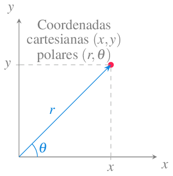Coordenadas polares.
Para pasar de coordenadas cartesianas a coordenadas polares, primero se obtiene el valor de \(r\) aplicando el teorema de Pitágoras
\[ r = \sqrt{x^2+y^2} \]
y después se obtiene el ángulo aplicando relaciones trigonométricas
\[ \theta = \begin{cases} \operatorname{arccos}\left(\frac{x}{r}\right) & \mbox{si $y\geq 0$}\\ -\operatorname{arccos}\left(\frac{x}{r}\right) & \mbox{si $y<0$} \end{cases} \]
suponiendo \(r\neq 0\).
Y para pasar de coordenadas polares a coordenadas cartesianas se aplican las siguientes relaciones trigonométricas
\[\begin{align*} x &= r \cos(\theta)\\ y &= r \operatorname{sen}(\theta) \end{align*}\]
Sumas de Riemann en coordenadas polares
Para calcular el area encerrada por una curva dada en coordenadas polares \(r=f(\theta)\) y las rectas \(\theta=a\) y \(\theta=b\), se puede utilizar una aproximación similar a las sumas de Riemann, descomponiendo el area en sectores de círculo con ángulos en una partición \(P=\{\theta_0=a, \theta_1, \ldots, \theta_n=b\}\) de \(I=[a,b]\). Si para cada uno de estos sectores se toma como radio el ínfimo de \(f(\theta)\) en el correspondiente subintervalo, surgen las sumas inferiores
\[ s(f,P) = \sum_{i=1}^n \pi m_i^2\frac{(\theta_i-\theta_{i-1})}{2\pi} = \sum_{i=1}^n \frac{m_i^2}{2}(\theta_i-\theta_{i-1}) \]
donde \(m_i=\inf\{f(\theta): \theta\in[\theta_{i-1},\theta_i]\}\) para \(i=1,\ldots,n\).
Mientras que si para cada uno de estos sectores se toma como radio el supremo de \(f(\theta)\) en el correspondiente subintervalo, surgen las sumas superiores
\[ S(f,P) = \sum_{i=1}^n \pi M_i^2\frac{(\theta_i-\theta_{i-1})}{2\pi} = \sum_{i=1}^n \frac{M_i^2}{2}(\theta_i-\theta_{i-1}) \]
donde \(M_i=\sup\{f(\theta): \theta\in[\theta_{i-1},\theta_i]\}\) para \(i=1,\ldots,n\).
Descomposición en sectores de círculos del area encerrada por una curva en polares.
De forma análoga se puede definir integral inferior de \(f\) en \(I\) como
\[ \underline{\int_a^b} f =\sup\{s(f,P): P\in \mathcal{P}(I)\} \]
y la integral superior de \(f\) en \(I\) como el número
\[ \overline{\int_a^b} f =\inf\{S(f,P): P\in \mathcal{P}(I)\}, \]
de manera que, si la integral inferior coincide con la superior, la función es integrable y
\[ \int_a^b \frac{f(\theta)^2}{2}\,d\theta \]
mide el área encerrada por la curva \(r=f(\theta)\) y las rectas \(\theta=a\) y \(\theta=b\).
Area encerrada por una curva en coordenadas polares.
Ejemplo 12 Un semicírculo de radio \(r\) puede expresarse en coordenadas polares mediante la función \(f(\theta)=r\) para \(0\leq \theta\leq \pi\). Por tanto, el área encerrada por este semicírculo es
\[ \int_0^{\pi} \frac{r^2}{2} \,d\theta = \left[\frac{r^2}{2}\theta\right]_0^\pi = \frac{r^2}{2}\pi. \]
Ejemplo 13 Veamos ahora cómo calcular el area encerrada por la curva polar \(r=3\operatorname{sen}(2\theta)\).
\[\begin{align*} \int_0^{2\pi} \frac{r^2}{2} &= \frac{1}{2}\int_0^{2\pi} (3\operatorname{sen}(2\theta))^2\,d\theta = \frac{9}{2}\int_0^{2\pi} \operatorname{sen}(2\theta)^2\,d\theta \\ &= \frac{9}{2}\int_0^{2\pi} \frac{1 - \cos(2\theta)}{2}\,d\theta = \frac{9}{4}\left[\theta - \frac{\operatorname{sen}(2\theta)}{2}\right]_0^{2\pi} \\ &= \frac{9}{4}\left(2\pi - \frac{\operatorname{sen}(4\pi)}{2}\right) = \frac{9}{4}2\pi = \frac{9}{2}\pi. \end{align*}\]
Area encerrada por la curva polar \(r=3\operatorname{sen}(2\theta)\).
Cálculo del area encerrada por dos curvas en coordenadas polares
También es posible calcular el area encerrada por dos curvas en coordenadas polares de forma análoga a como se hizo para el area encerrada entre dos funciones en coordenadas cartesianas.
Si tenemos dos curvas polares \(r=f(\theta)\) y \(r=g(\theta)\), con \(f(\theta)\leq g(\theta)\) \(\forall \theta\in[a,b]\), el area encerrada entre estas dos curvas en el intervalo \([a,b]\) puede calcularse restando el area encerrada por \(g\) al area encerrada por \(f\), es decir,
\[ \frac{1}{2} \int_a^b f(\theta)^2\,d\theta - \frac{1}{2} \int_a^b g(\theta)^2\,d\theta = \frac{1}{2} \int_a^b f(\theta)^2-g(\theta)^2\,d\theta \]
Area encerrada entre dos curvas polares$.
En general, cuando \(f\) es mayor que \(g\) en algunos subintervalos de \(I\) y menor en otros, habrá que descomponer el intervalo de integración en subintervalos donde la diferencia \(f-g\) sea sea positiva o negativa, integrar \(f-g\) en los intervalos donde la diferencia es positiva, integrar \(-(f-g)=g-f\) en los intervalos donde la diferencia es negativa, y finalmente, sumar las areas correspondientes a cada subintervalo.
Ejemplo 14 Vamos a calcular el area encerrada entre las curvas polares \(r=3\cos(\theta)\) y \(r=1+\cos(\theta)\). Para ello primero debemos determinar el intervalo de integración a partir de los puntos de corte de las dos curvas.
\[ 3\cos(\theta) = 1 + \cos(\theta) \Leftrightarrow \cos(\theta) = \frac{1}{2} \Leftrightarrow \theta = \operatorname{arccos}\left(\frac{1}{2}\right) = \pm \frac{\pi}{6} \]
Así pues, el intervalo de integración es \([-\frac{\pi}{6},\frac{\pi}{6}]\). Como en este intervalo \(1+\cos(\theta) \leq 3\cos(\theta)\), el area encerrada entre estas dos curvas es
\[\begin{align*} \frac{1}{2}\int_{-\pi/6}^{\pi/6}f(\theta)^2-g(\theta)^2\,d\theta &= \frac{1}{2} \int_{-\pi/6}^{\pi/6}(3\cos(\theta))^2 - (1+\cos(\theta))^2 \,d\theta \\ &= \frac{1}{2} \int_{-\pi/6}^{\pi/6}(8\cos(\theta))^2 - 2\cos(\theta) - 1 \,d\theta \\ &= \frac{1}{2}\left(8\int_{-\pi/6}^{\pi/6}\cos(\theta)^2\,d\theta - 2\int_{-\pi/6}^{\pi/6}\cos(\theta)\,d\theta - \int_{-\pi/6}^{\pi/6}\,d\theta \right) \\ &= \frac{1}{2}\left([2\operatorname{sen}(2\theta)+4\theta]_{-\pi/6}^{\pi/6} - 2[\operatorname{sen}(\theta)]_{-\pi/6}^{\pi/6} - [\theta]_{-\pi/6}^{\pi/6} \right) \\ &= \frac{1}{2}\left(\sqrt{3}+\frac{4\pi}{6} +\sqrt{3} +\frac{4\pi}{6}\right)\\ &= \frac{\pi}{2}+\sqrt{3}-1 \approx 2.3028 \end{align*}\]
Area encerrada entre las curvas polares \(r=3\cos(\theta)\) y \(r=1+\cos(\theta)\).
Integrales impropias
El concepto de integral definida de una función en un intervalo cerrado \([a,b\)] y se puede generalizar a intervalos no acotados y también a funciones con discontinuidades de salto infinito.
Definición 10 (Integral impropia de primer tipo) Dada una función \(f:I\to\mathbb{R}\) integrable en \(I=[a,t]\) para \(\forall t>a\), se define la integral impropia de \(f\) en el intervalo \([a,\infty)\) como el límite
\[ \int_a^\infty f(x)\,dx = \lim_{t\to\infty} \int_a^t f(x)\,dx \]
siempre que este límite exista, en cuyo caso se dice que la integral impropia converge.
Del mismo modo, si \(f\) es integrable en \(I=[t,a]\) para \(\forall t<a\), se define la integral impropia de \(f\) en el intervalo \((-\infty, a]\) como el límite
\[ \int_{-\infty}^a f(x)\,dx = \lim_{t\to\infty} \int_t^a f(x)\,dx. \]
Finalmente, si \(\int_{-\infty}^a f(x)\,dx\) y \(\int_a^\infty f(x)\,dx\) convergen, se define la integral impropia de \(f\) en el intervalo \((-\infty, \infty)\) como
\[ \int_{-\infty}^\infty f(x)\,dx = \int_{-\infty}^a f(x)\,dx + \int_a^\infty f(x)\,dx \]
Para funciones positivas en los dominios de integración, estas integrales impropias pueden interpretarse también como áreas. En particular, \(\int_a^\infty f(x)\,dx\) es el area encerrada por la gráfica de \(f\) y el eje \(x\) en el intervalo \([a,\infty)\), \(\int_{-\infty}^\infty f(x)\,dx\) es el area encerrada por la gráfica de \(f\) y el eje \(x\) en el intervalo \((-\infty,a]\) y \(\int_{-\infty}^\infty f(x)\,dx\) es el area encerrada por la gráfica de \(f\) y el eje \(x\) en todo \(\mathbb{R}\).
Ejemplo 15 La integral impropia de la función \(f(x)=\frac{1}{x^2}\) converge en el intervalo \([1,\infty]\) ya que
\[ \int_1^\infty \frac{1}{x^2}\,dx = \lim_{t\to\infty} \int_1^t \frac{1}{x^2}\,dx = \lim_{t\to\infty}\left[\frac{-1}{x}\right]_1^t = \lim_{n\to\infty} 1-\frac{1}{t} = 1. \]
Por tanto, el área que queda encerrada por la gráfica de \(f\) y el eje \(x\) por encima de \(1\) es finita y vale \(1\).
Sin embargo, la integral impropia de la función \(g(x)=\frac{1}{x}\) diverge en el intervalo \([1,\infty]\) ya que
\[ \int_1^\infty \frac{1}{x}\,dx = \lim_{t\to\infty} \int_1^t \frac{1}{x}\,dx = \lim_{t\to\infty}\left[\ln(x)\right]_1^t = \lim_{n\to\infty} \ln(t) = \infty. \]
Y por tanto, el área que queda encerrada por la gráfica de \(g\) y el eje \(x\) por encima de \(1\) es infinita.
En estos casos la región encerrada por la gráfica de la función y el eje \(x\) se extiende de manera infinita a lo largo del eje \(x\). La misma idea puede aplicarse para calcular areas de regiones encerradas por la gráfica de \(f\) y el eje \(y\) cuando estas regiones se extienden de manera infinita porque la función no está acotada en algún valor del dominio de integración.
Definición 11 (Integral impropia de segundo tipo) Dada una función \(f:I\to\mathbb{R}\) continua en \(I=[a,b)\) y discontinua en \(b\), se define la integral impropia de \(f\) en \(I\) como el límite
\[ \int_a^b f(x)\,dx = \lim_{t\to b^-} \int_a^t f(x)\,dx \]
siempre que este límite exista, en cuyo caso se dice que la integral impropia converge.
Cálculo de volúmenes
Otra de las aplicaciones habituales de las integrales es el cálculo de volúmenes de cuerpos sólidos tridimensionales con secciones transversales regulares. El procedimiento es similar al utilizado para el cálculo de areas de regiones planas, pero en lugar de aproximar el area mediante sumas de Riemann de rectángulos, se utilizan sumas de Riemann de figuras geométricas de volumen conocido, habitualmente discos o envoltorios cilíndricos. Para ello tomaremos secciones transversales del cuerpo sólido del que se quiere calcular el volumen con respecto a alguno de los ejes a lo largo de una partición del intervalo donde está definido el sólido en ese eje.
Sección transversal de un cuerpo sólido con respecto al eje \(x\)
En general, si disponemos de una función \(A(x)\) que nos da el área de la sección transversal del sólido para cada \(x\in[a,b]\), podemos tomar una partición \(P_n=\{x_0=a,x_1,\ldots, x_n=b\}\) del intervalo \([a,b]\) y aproximar el volumen del sólido en este intervalo mediante las sumas inferior y superior de Riemann
\[\begin{align*} s(A,P_n) &= \sum_{i=1}^n m_i(x_i-x_{i-1}),\quad m_i=\inf\{A(x): x\in(x_{i-1},x_i)\}\\ S(A,P_n) &= \sum_{i=1}^n M_i(x_i-x_{i-1}),\quad M_i=\sup\{A(x): x\in(x_{i-1},x_i)\} \end{align*}\]
donde \(m_i (x_i-x_{i-1})\) es el volumen de un disco cilíndrico de base \(m_i\) y altura \(x_i-x_{i-1}\), y \(M_i (x_i-x_{i-1})\) es el volumen de un cilindro de base \(M_i\) y altura \(x_i-x_{i-1}\).
Como ya hemos visto, si \(\lim_{n\to\infty} s(A,P_n) = \lim_{n\to\infty} S(A,P_n)\), la función \(A(x)\) es integrable Riemann en el intervalo \([a,b]\) y
\[ \int_a^b A(x)\,dx = \lim_{n\to\infty} s(A,P_n) = \lim_{n\to\infty} S(A,P_n), \]
mide el volumen del cuerpo sólido con secciones transversales de área \(A(x)\) en el intervalo \([a,b]\).
Ejemplo 16 Veamos cómo calcular el volumen de una esfera de radio \(r\) centrada en el origen con ecuación \(x^2+y^2+z^2=r^2\). Si cortamos la esfera con planos \(x=x_i\) perpendiculares al eje \(x\), sustituyendo en la ecuación de la esfera, se tiene \(y^2+z^2=r^2-x_i^2\), por lo que se obtienen secciones transversales circulares con radio \(\sqrt{r^2-x_i^2}\), y, por tanto, el área de estas secciones circulares será \(\pi \left(\sqrt{r^2-x_i^2}\right)^2= \pi (r^2-x_i^2)\). Así pues, la función que nos da el área de la sección transversal para cualquier \(x\in[-r,r]\) es \(A(x)=\pi(r^2-x^2)\), y por tanto, podemos calcular el volumen de la esfera con la integral definida
\[\begin{align*} \int_{-r}^r \pi(r^2-x^2)\,dx &= \pi\left[r^2x-\frac{x^3}{3}\right]_{-r}^r \\ &= \pi\left(r^2r-\frac{r^3}{3}-\left(r^2(-r)-\frac{(-r)^3}{3}\right)\right) \\ &= 2r^3 - \frac{2r^3}{3} = \frac{4}{3}\pi r^3. \end{align*}\]
Cálculo de volúmenes de sólidos de revolución con discos cilíndricos
Cuando el sólido se obtiene rotando una función \(f(x)\) alrededor del eje \(x\), se dice que el sólido resultante es un sólido de revolución.
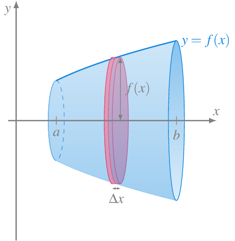Sólido de revolución.
Este tipo de sólidos tiene la particularidad de que todas sus secciones transversales con respecto al eje de rotación son círculos de radio \(f(x)\), por lo que el área de las secciones transversales es \(A(x)=\pi f(x)^2\), y su volumen en el intervalo \([a,b]\) puede calcularse mediante la integral definida
\[ \int_a^b \pi f(x)^2\,dx \]
Cálculo de volúmenes mediante discos cilíndricos
Ejemplo 17 Si rotamos alrededor del eje \(x\) el segmento de la recta \(f(x)=2-x\) correspondiente al intervalo \(x\in[0,2]\), se obtiene un cono con base de radio \(2\) y altura \(2\). El volumen de este cono es
\[\begin{align*} \int_0^2 \pi f(x)^2\,dx &= \int_0^2 \pi (2-x)^2\,dx = \pi \int_0^2 x^2-4x+4\,dx \\ &= \pi \left[\frac{x^3}{3}-2x^2+4x\right]_0^2 = \pi\left(\frac{2^3}{3}-2\cdot 2^2+4\cdot 2\right) = \frac{8}{3}\pi. \end{align*}\]
Cálculo de volúmenes de sólidos de revolución con envoltorios cilíndricos
Otra forma de calcular volúmenes de sólidos de revolución es mediante envoltorios o envolventes cilíndricas como los de figura de mas abajo.
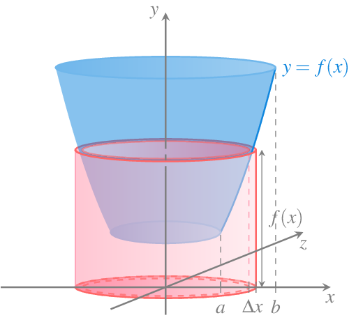Envoltorio cilíndrico de un sólido de revolución.
Los envoltorios se construyen de forma que su base es un círculo de radio \(x\in [a,b]\) y perpendicular al eje de rotación del sólido de revolución y su altura es \(f(x)\), de manera que su área (sin contar el área de las bases) es \(2\pi x f(x)\). Sumando las áreas de estos infinitos envoltorios que se obtienen para cada \(x\in[a,b]\) se obtiene al volumen del cuerpo sólido de revolución en el intervalo \([a,b]\) mediante la integral definida
\[ \int_a^b 2\pi x f(x)\,dx \]
Cálculo de volúmenes mediante envoltorios cilíndricos
Ejemplo 18 El volumen del sólido de revolución que se obtiene al rotar alrededor del eje \(y\) la función \(f(x)=x^2\) en el intervalo \([0,2]\) puede calcularse usando tanto discos como envoltorios cilíndricos.
Si usamos discos discos cilíndricos debemos expresar \(x\) en función de \(y\), es decir \(x=\sqrt{y}\) y calcular la siguiente integral definida en el intervalo \([f(0),f(2)]\)
\[ \int_0^4 \pi g(y)^2\,dy = \int_0^4 \pi \left(\sqrt{y}\right)^2\,dy = \left[\pi\frac{y^2}{2}\right]_0^4 = \pi\frac{4^2}{2} = 8\pi. \]
Mientras que si usamos envoltorios cilíndricos hay que calcular la integral
\[ \int_0^2 2\pi x f(x)\,dx = \int_0^2 2\pi x\cdot x^2\,dx = 2\pi\left[\frac{x^4}{4}\right]_0^2 = 2\pi \frac{2^4}{4} = 8\pi. \]
Cálculo de la longitud de una curva
Otra importante aplicación geométrica de las integrales es el cálculo de la longitud de una curva dada por una función en un intervalo \([a,b]\).
Una vez más, la idea consiste en dividir el intervalo \([a,b]\) en \(n\) subinvervalos de igual amplitud mediante una partición \(P_n=\{x_0=a, x_1, \ldots, x_n=b\}\) con \(\Delta x = x_i-x{i-1}\) \(i=1,\ldots,n\), y para cada subintervalo \([x_{i-1}, x_i]\) tomar el segmento que une los puntos \((x_{i-1}, f(x_{i-1}))\) y \((x_i,f(x_i))\). La suma de todos los segmentos correspondientes a la partición tomada nos dará una aproximación de la longitud de la curva de la función en el intervalo \([a,b]\).
Aproximación de la longitud de una curva mediante segmentos.
Aplicando el teorema de Pitágoras, es fácil ver que la longitud del segmento correspondiente al subintervalo \([x_{i-1},x_i]\) es
\[ \sqrt{(x_i-x_{i-1})^2+(f(x_i)-f(x_{i-1}))^2} = \sqrt{\Delta x^2+(f(x_i)-f(x_{i-1}))^2}. \]
Por otro lado, si \(f\) es diferenciable en \([x_{i-1},x_{i}]\), según el teorema del valor medio, se tiene que existe un \(x'_i\in [x_{i-1},x_i]\) tal que
\[ f'(x'_i) = \frac{f(x_i)-f(x_{i-1})}{x_i-x_{i-1}} \]
de manera que
\[ f(x_i)-f(x_{i-1})=f'(x'_i)(x_i-x_{i-1}) = f'(x'_i)\Delta x, \]
y la longitud del segmento puede expresarse como
\[\begin{align*} \sqrt{\Delta x^2+(f(x_i)-f(x_{i-1}))^2} &= \sqrt{\Delta x^2+(f'(x'_i)\Delta x)^2}\\ &= \Delta x\sqrt{1+f'(x'_i)^2}, \end{align*}\]
y la suma de todos los segmentos resulta
\[ \sum_{i=1}^n \sqrt{1+f'(x'_i)^2}\Delta x \]
Resulta evidente, que a medida que aumentemos el número de subintervalos \(n\) de la partición, la aproximación de la longitud de la curva será mejor y en el límite tendremos su valor exacto, que puede calcularse mediante la integral definida
\[ \lim_{n\to\infty} \sum_{i=1}^n \sqrt{1+f'(x'_i)^2} \Delta x = \int_a^b \sqrt{1+f'(x)^2}\, dx, \]
siempre y cuando \(f'(x)\) sea integrable en \([a,b]\).
Ejemplo 19 Veamos cómo calcular la longitud de una circunferencia de radio \(1\) centrada en el origen con ecuación \(x^2+y^2=1\). Resolviendo esta ecuación para \(y\) se tiene que \(y=\pm \sqrt{1-x^2}\), y podemos tomar la función \(f(x)=\sqrt{1-x^2}\) cuya gráfica es la semicircunferencia superior.
La derivada de \(f\) es \(f'(x)=\frac{-x}{\sqrt{1-x^2}}\), de manera que la longitud de la semicircunferencia es
\[\begin{align*} \int_{-1}^1 \sqrt{1+\left(\frac{-x}{\sqrt{1-x^2}}\right)^2}\,dx &= \int_{-1}^1 \sqrt{1+\frac{x^2}{1-x^2}}\,dx = \int_{-1}^1 \sqrt{\frac{1}{1-x^2}}\,dx \end{align*}\]
Esta integral es impropia ya que \(\frac{1}{1-x^2}\) tiende a \(\infty\) cuando \(x\) tiende a \(\pm 1\), por lo que se tiene
\[\begin{align*} \int_{-1}^1 \sqrt{\frac{1}{1-x^2}}\,dx &= \lim_{t\to -1^+}\int_{t}^0 \sqrt{\frac{1}{1-x^2}}\,dx + \lim_{t\to 1^+}\int_0^t \sqrt{\frac{1}{1-x^2}}\,dx \\ &= -\lim_{t\to -1^+} \operatorname{arcsen}(t) + \lim_{t\to 1^+} \operatorname{arcsen}(t) = -\left(-\frac{\pi}{2}\right)+\frac{\pi}{2} = \pi \end{align*}\]
Y por tanto, la longitud de la circunferencia de radio \(1\) es el doble \(2\pi\)
Cálculo de superficies de sólidos de revolución
A partir del cálculo de la longitud de una curva plana, se puede calcular la superficie del sólido de revolución que se obtiene al girarla sobre el eje \(x\). Siguiendo con la idea de aproximar la longitud de la curva mediante polígonos, al rotar alrededor del eje \(x\) cada uno de los segmentos que forman parte del polígono, se obtiene un tronco de cono.
Para calcular la superficie del envolvente del tronco de cono, veremos primero cuál es el la superficie de este envolvente para un cono completo. Si desplegamos el envolvente de un cono completo cortándolo por su generatriz, se puede comprobar que se trata de un sector de círculo con radio la generatriz del cono \(l\) y con arco de circunferencia el perímetro del círculo de la base del cono \(2\pi r\).
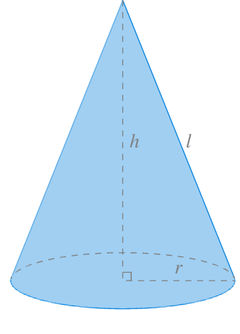
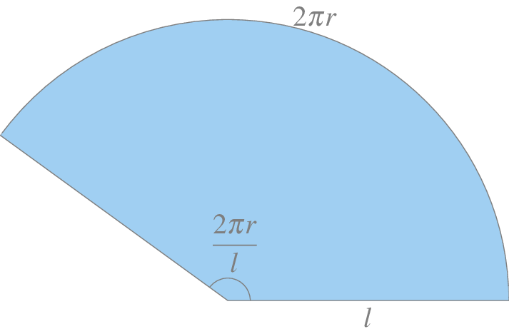
El ángulo que describe este sector de círculo es \(\theta = \frac{2\pi r}{l}\), y por tanto, su área es \(\frac{\theta}{2}l^2= \frac{2\pi r}{2l}l^2 = \pi rl\).
Para calcular ahora la superficie del envolvente del tronco de cono como del de la figura de más abajo, con radio menor \(r_1\) y radio mayor \(r_2\), basta con restar a la superficie del cono de radio \(r_2\) y generatriz \(l_2\), la superficie del cono de radio \(r_1\) y generatriz \(l_1\).
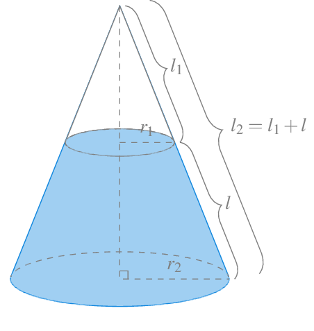Tronco de cono con radio menor \(r_1\) y radio mayor \(r_2\).
La superficie del tronco de cono es, por tanto,
\[ \pi r_2 l_2 - \pi r_1 l_1 = \pi (r_2l_2-r_1l_1) = \pi(r_2(l+l_1)-r_1l_1) = \pi ((r_2-r_1)l_1+r_2l) \]
Para poder expresar la superficie en función de \(l\), como por semejanza de triángulos rectángulos se tiene que
\[ \frac{l_1}{r_1}=\frac{l_2}{r_2}=\frac{l+l_1}{r_2} \Leftrightarrow r_2l_1 = r_1(l+l_1) \Leftrightarrow r_1l = (r_2-r_1)l_1, \]
de manera que sustituyendo en la expresión de la superficie del tronco del cono, se tiene
\[ \pi ((r_2-r_1)l_1+r_2l) = \pi (r_1l+r_2l) = \pi (r_1+r_2) l. \]
Así pues, si tomamos una partición \(P_n=\{x_0=a, x_1, \ldots, x_n=b\}\) del intervalo \([a,b]\), la superficie del tronco de cono correspondiente al subintervalo \([x_{i-1},x_i]\) es
\[ S_i = \pi (f(x_{i-1}+f(x_i))l_i, \]
donde \(l_i\) es la longitud del segmento que une los puntos \((x_{i-1},f(x_{i-1}))\) y \((x_i,f(x_i))\), que como vimos en la sección anterior, puede expresarse, gracias al teorema del valor medio, como \(\sqrt{1+f'(x'_i)^2}\) para algún \(x'_i \in [x_{i-1},x_i]\). Por tanto, la superficie del tronco de cono correspondiente al subintervalo \([x_{i-1},x_i]\) puede expresarse finalmente como
\[ S_i = \pi (f(x_{i-1}+f(x_i))\sqrt{1+f'(x'_i)^2} \] para algún \(x'_i\in [x_{i-1},x_i]\).
Si sumamos las superficies de todos los troncos de cono que se obtienen para la partición \(P_n\),
\[ \sum_{i=1}^n S_i = \sum_{i=1}^n \pi (f(x_{i-1}+f(x_i))\sqrt{1+f'(x'_i)^2}, \]
se obtiene una aproximación de la superficie del sólido de revolución generado al rotar la gráfica de la función \(f\) alrededor del eje \(x\). A medida que aumentamos el número de intervalos en la partición, la aproximación será mejor y en el límite cuanto \(n\) tiende a \(\infty\), tendremos el valor exacto de la superficie de revolución. Como ya se ha visto en las secciones anteriores, esta suma infinita es la integral de Riemann de las superficie del tronco de cono, es decir,
\[ S = \lim_{n\to\infty} \sum_{i=1}^n \pi (f(x_{i-1}+f(x_i))\sqrt{1+f'(x'_i)^2} = \int_a^b 2 \pi f(x)\sqrt{1+f'(x)^2}\,dx, \]
ya que, cuando los intervalos se hacen infinitamente pequeños, \(f(x_{i_1})\) y \(f(x_i)\) se aproximan cada vez más el uno al otro y, en el límite, acaban siendo el mismo valor \(f(x)\), por lo que en la integral se pone \(2 f(x)\).
Ejemplo 20 Veamos cómo calcular la superficie de una esfera de radio \(r\) centrada en el origen. Esta esfera es el sólido de revolución que surge al rotar la función \(f(x)=\sqrt{r^2-x^2}\) alrededor del eje \(x\), por lo que su superficie puede calcularse mediante la integral
\[\begin{align*} \int_{-r}^r 2 \pi f(x)\sqrt{1+f'(x)^2}\,dx &= \int_{-r}^r 2 \pi \sqrt{r^2-x^2}\sqrt{1+\left(\frac{-x}{\sqrt{r^2-x^2}}\right)^2}\,dx \\ &= \int_{-r}^r 2 \pi \sqrt{r^2-x^2}\sqrt{1+\frac{x^2}{r^2-x^2}}\,dx \\ &= \int_{-r}^r 2 \pi \sqrt{r^2-x^2}\sqrt{\frac{r^2}{r^2-x^2}}\,dx \\ &= \int_{-r}^r 2 \pi \sqrt{r^2-x^2\frac{r^2}{r^2-x^2}}\,dx \\ &= \int_{-r}^r 2 \pi \sqrt{r^2}\,dx = \int_{-r}^r 2 \pi r\,dx \\ &= 2 \pi r [x]_{-r}^r = 2\pi r(r-(-r)) = 4\pi r^2. \end{align*}\]
Aplicaciones físicas
En esta sección presentamos varias aplicaciones de las integrales en distintas áreas de la Física.
Cinemática
Como ya ese vió en la interpretación cinemática de la derivada, cuando \(s(t)\) es una función que describe la posición de un objeto que se mueve a lo largo del eje \(x\), \(s'(t)\) es la velocidad instantánea del objeto en cada instante \(t\) y \(s''(t)\) es la aceleración en cada instante \(t\).
Así pues, si conocemos la velocidad instantánea \(v(t)\) de un objeto en cada instante \(t\), podemos averiguar su posición integrando la velocidad. Como $s(t) es una primitiva de \(v(t)\), según el teorema fundamental del cálculo, se tiene
\[ \int_a^b v(t)\, dt = s(a)-s(b), \]
es decir, la diferencia entre la posición el objeto en los instantes \(t=b\) y \(t=a\).
La integral anterior mide el desplazamiento neto del objeto, que coincide con el desplazamiento absoluto si la función velocidad es positiva en el intervalo de integración, pero si toma valores positivos y negativos, para calcular la distancia total recorrida por el objeto en el intervalo \([a, b]\), es necesario integrar el valor absoluto de la velocidad, tal y como se hizo para el cálculo de áreas en la ?@sec-calculo-area-funcion-ejex.
En general, suponiendo que el instante inicial en el que comienza el movimiento es el instante \(t=0\), y por tanto, la posición inicial del objeto es \(s(0)\), la posición que ocupa el objeto en cualquier instante \(t\) viene dada por la integral
\[ s(t) = s(0) + \int_{0}^t v(x)\,dx. \]
Del mismo modo, si conocemos la aceleración del objeto \(a(t)\) en cada instante \(t\), podemos averiguar su velocidad integrando la aceleración. Como \(v(t)\) es una primitiva de \(a(t)\), según el teorema fundamental del cálculo, se tiene
\[ \int_a^b a(t)\, dt = v(t_1)-v(t_0), \]
es decir, la diferencia entre la velocidades en los instantes \(a\) y \(b\).
Si suponemos como antes, que el instante inicial en el que comienza el movimiento es el instante \(t=0\), y por tanto, la velocidad inicial del objeto es \(v(0)\), la velocidad del objeto en cualquier instante \(t\) viene dada por la integral
\[ v(t) = v(0) + \int_{0}^t a(x)\,dx. \]
Combinando estos dos resultados, es posible averiguar la posición que ocupa el objeto si es conoce su aceleración.
Ejemplo 21 Veamos cómo podemos deducir la famosa fórmula de la posición de un objeto en caída libre. En este caso, supondremos que la posición inicial del objeto es \(s(0)=s_0\) m y su velocidad inicial es \(v(0)=v_0\) m/s. Además, supondremos que no hay rozamiento, por lo que la única fuerza que actúa sobre el objeto es la gravedad, con una aceleración constante \(g=9.8\) m/s\(^2\).
Integrando la aceleración obtenemos la velocidad del objeto en cada instante \(t\).
\[ v(t) = v(0) + \int_{0}^t -g\,dx = v_0 -g [x]_0^t = v_0-gt \]
Ahora, integrando la velocidad obtenemos la posición el objeto en cada instante \(t\).
\[ s(t) = s(0) + \int_{0}^t v_0-gx\,dx = s_0 + \left[v_0 x-g\frac{x^2}{2}\right]_0^t = s_0+v_0 t-g\frac{t^2}{2}. \]
En el caso de que la posición inicial sea \(s_0=0\) m, y se parta de una situación de reposo, es decir, \(v_0=0\) m/s, se llega a
\[ s(t) = -g\frac{t^2}{2}. \]
Trabajo
Otra aplicación importante de las integrales en Física es el cálculo del trabajo realizado al desplazar un objeto aplicándole una fuerza. En mecánica clásica, si un objeto se desplaza en línea recta y su posición viene dada por la función \(s(t)\), la fuerza \(F\) ejercida sobre el objeto viene dada por la segunda ley de Newton
\[ F = m\cdot a \]
donde \(m\) es la masa del objeto y \(a\) es la aceleración.
La unidad de medida de la fuerza en el Sistema Internacional (SI) es el newton N=kg\(\cdot\) m /s\(^2\), es decir, si se aplica \(1\) N a un objeto de masa \(1\) kg, este sufrirá una aceleración de \(1\) m/s\(^2\).
Cuando se aplica una fuerza sobre un objeto desplazándolo en línea recta una determinada distancia, el trabajo \(W\) realizado en ese desplazamiento viene dado por el producto de la fuerza y la distancia que recorre el objeto, es decir,
\[ W = F\cdot d \]
Como la fuerza se mide en newtons, la unidad del trabajo en el SI es el julio \(J = N\cdot m\).
Cuando la fuerza es constante, el trabajo es proporcional a la distancia recorrida.
Ejemplo 22 Si levantamos una pesa de 1 kg desde el suelo hasta una altura de 2 m, la fuerza ejercida es igual y opuesta a la que ejerce la gravedad, es decir,
\[ F = m\cdot g = 1 \mbox{ kg} \cdot 9.81 \mbox{ m/s$^2$} = 9.8 \mbox{ N}, \]
y el trabajo realizado es
\[ W = F\cdot d = 9.81 \mbox{ N} \cdot 2 \mbox{ m} = 19.62 \mbox{ J} \]
Cuando la fuerza que se aplica sobre el objeto no es constante, sino que viene dada por una función \(f(x)\), el cálculo no es tan sencillo, pero podemos aplicar la misma estrategia utilizada con las sumas de Riemann. Si se quiere calcular el trabajo realizado al desplazar el objeto desde la posición \(x=a\) hasta \(x=b\) aplicando una fuerza \(f(x)\), podemos tomar una partición \(P_n=\{x_0=a, x_1, \ldots, x_n=b\}\) de \(n\) intervalos de igual amplitud \(\Delta x\) y aproximar el trabajo realizado en el intervalo \([x_{i-1},x_i]\) con \(W_i= f(x'_i)(x_i-x_{i-1}) = f(x'_i)\Delta x\), donde \(x'_i\) es cualquier valor del intervalo \([x_{i-1},x_i]\). De este modo, el trabajo realizado en el intervalo \([a,b]\) puede aproximarse mediante la suma
\[ W = \sum_{i=1}^n W_i = \sum_{i=1}^n f(x'_i)\Delta x. \]
Como ya se ha visto, cuando el número de subintervalos tiende a \(\infty\), en el límite, si la función \(f\) es integrable Riemann, podemos obtener el trabajo exacto realizado con la integral
\[ \int_a^b f(x)\,dx \]
La integral anterior mide el trabajo realizado al aplicar una fuerza en el sentido del desplazamiento, es decir, cuando es positiva.
Ejemplo 23 La función \(f(x)=\frac{1}{1+x}\) determina la fuerza que actúa sobre una partícula situada a una distancia \(x\) del origen de coordenadas. El trabajo que se realiza al desplazar la partícula desde el origen al punto \(1\) es
\[ W = \int_0^1 \frac{1}{1+x}\,dx = [\ln(1+x)]_0^1 = \ln(2) \mbox{ J}. \]
Centro de masas
El centro de masas de un objeto o sistema de objetos es el punto geométrico que dinámicamente se comporta como si en él estuvieran aplicadas las fuerzas que actúan sobre el objeto. En el caso de un sistema discreto, como por ejemplo una palanca sobre la que se coloca un número finito de pesos, como en la figura de más abajo, determinar el centro de gravedad es sencillo, ya que basta aplicar la ley de la palanca de Arquímedes, que establece
\[ m_1d_1 = m_2d_2 \]
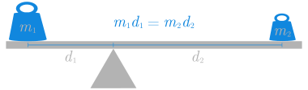
Si colocamos las dos masas \(m_1\) y \(m_2\) sobre el eje \(x\) en las posiciones \(x_1\) y \(x_2\) respectivamente, el centro de masas \(\bar x\), que se correspondería con la posición donde habría que poner el punto de apoyo de la palanca para que las dos masas la equilibraran, se puede calcular aplicando la ley de la palanca,
\[ m_1(\bar x-x_1) = m_2(x_2-\bar x) \Leftrightarrow \bar x = \frac{m_1x_1+m_2x_2}{m_1+m_2}, \]
que, en realidad, es la media de las posiciones de \(x_1\) y \(x_2\) ponderada de las masas.
Debido a la fuerza de la gravedad, cada objeto ejerce una fuerza sobre la palanca que tiende a rotarla alrededor del punto de apoyo (si el objeto está a la izquierda del punto de apoyo provocará una rotación en sentido antihorario, mientras que si está a la derecha lo hará en sentido horario). Esta efecto de rotación se conoce como momento o torque, y para un objeto de masa \(m\) colocado en la posición \(x\) de la palanca, toma el valor \(m\cdot x\cdot g\), y sus unidades en el sistema internacional son \(N\cdot m\) (aunque ya hemos visto que \(N\cdot m\) son julios, en este caso las unidades de los momentos no se expresan en julios para distinguirlos del trabajo, ya que el trabajo es una magnitud escalar, mientras que el momento es una magnitud vectorial).
En general, si hay \(n\) objetos sobre la balanza, el centro de masas se alcanzará en el punto \(\bar x\) que cumpla,
\[ \sum_{i=1}^n m_i(x_i-\bar x) = 0 \Leftrightarrow \bar x = \frac{\sum_{i=1}^n m_ix_i}{\sum_{i=1}^n m_i}. \]
Centro de masas de una varilla con densidad variable
Cuando el sistema contiene infinitos objetos de distintas masas, o se trata de un objeto con una densidad variable, la cosa se complica. Por ejemplo si queremos calcular el centro de masas de una varilla metálica sobre un intervalo \([a,b]\), tal que su densidad viene dada por la función \(f(x)\) kg/m, se puede descomponer el intervalo \([a,b]\) en \(n\) subintervalos de igual amplitud mediante una partición \(P_n=\{x_0=a, x_1, \ldots, x_n=b\)}$, con \(\Delta x=x_i-x_{i-1}\) \(i=1, \ldots, n\). Podemos aproximar la masa de cada subintervalo, asumiendo que tuviese una densidad constante \(f(x_i)\), como \(m_i = f(x_i)(x_i-x_{i-1}) = f(x_i) \Delta x\), y por tanto,su momento será \(x_im_i = x_i f(x_i)\Delta x\). De este modo, el centro de masas de la varilla será aproximadamente, según la fórmula anterior,
\[ \bar x = \frac{\sum_{i=1}^n m_ix_i}{\sum_{i=1}^n m_i} = \frac{\sum_{i=1}^n x_if(x_i)\Delta x}{\sum_{i=1}^n f(x_i)\Delta x}, \]
que es el cociente de dos sumas de Riemann. De nuevo, si aumentamos el número de subintervalos, cuando \(n\) tiende a \(\infty\), en el límite se obtiene el valor exacto del centro de masas mediante el cociente de dos integrales definidas
\[ \bar x = \frac{\int_a^b xf(x)\,dx}{\int_a^b f(x)\,dx} \]
El centro de masas de una varilla situada sobre el intervalo \([5, 10]\) con una densidad en cada punto \(x\) dada por la función \(f(x)=2x-1\) es
\[\begin{align*} \bar x &= \frac{\int_5^{10} xf(x)\,dx}{\int_5^{10} f(x)\,dx} = \frac{\int_5^{10} x(2x-1)\,dx}{\int_5^{10} 2x-1\,dx} \\ &= \frac{\left[2\frac{x^3}{3}-\frac{x^2}{2}\right]_5^{10}}{[x^2-x]_5^{10}} = \frac{\left(2\frac{10^3}{3}-\frac{10^2}{2}-2\frac{5^3}{3}+\frac{5^2}{2}\right)}{10^2-10-5^2+5} \\ &= \frac{3275/6}{70} = 7.7976. \end{align*}\]
Centro de masas de una región plana con densidad fija
Cuando se tiene una región plana en \(\mathbb{R}^2\), su centro de masas se conoce como centroide y sus coordenadas se representan como \((\bar x, \bar y)\). El cálculo de las coordenadas del centroide, cuando todos los puntos de la región plana tienen la misma densidad \(\delta\), se puede realizar de forma similar al cálculo del centro de masas de una varilla con densidad variable.
Si la región está delimitada por una función \(f(x)\) y el eje \(x\) en un intervalo \([a,b]\), al descomponer el intervalo \([a,b]\) en \(n\) subintervalos de igual amplitud mediante una partición \(P_n=\{x_0=a, x_1, \ldots, x_n=b\)}$, con \(\Delta x=x_i-x_{i-1}\) \(i=1, \ldots, n\), se puede tomar como aproximación del área correspondiente a cada subintervalo \([x_{i-1},x_i]\) el rectángulo con base el intervalo y altura el valor de la función en el punto medio del intervalo. Si llamamos al punto medio del subintervalo \(i\)-ésimo subintervalo \(\bar x_i=\frac{x_{i-1}+x_i}{2}\), el área del rectángulo correspondiente es \(A_i = f(\bar x_i)\Delta x\) y su masa \(M_i = \delta f(\bar x_i)\Delta x\). Como todos los puntos tienen la misma densidad \(\delta\), el centroide del rectángulo \(i\)-ésimo es \((\bar x_i, \frac{1}{2}f(\bar x_i))\).
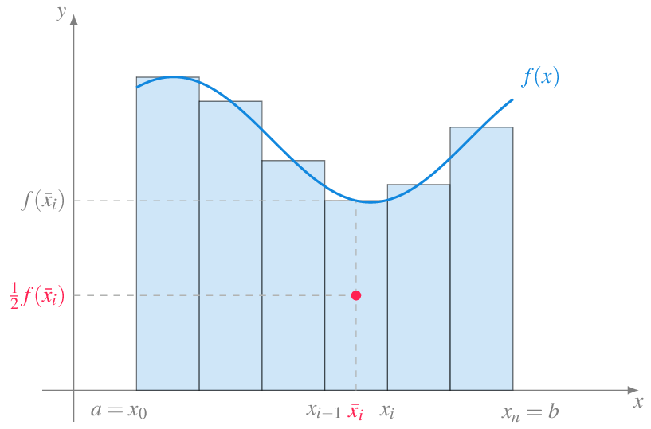
El momento del rectángulo \(i\)-ésimo con respecto al eje \(y\) es
\[ \bar x_i M_i = x_i \delta f(\bar x_i)\Delta x \]
de manera que podemos aproximar el momento de la región con respecto al eje \(y\) mediante la suma de Riemann
\[ \sum_{i=1}^n x_i \delta f(\bar x_i)\Delta x = \delta \sum_{i=1}^n x_i f(\bar x_i)\Delta x, \]
y, tomando particiones cada vez con más subintervalos, en el límite cuanto \(n\) tiende a \(\infty\) se obtiene el momento de la región con respecto al eje \(y\) mediante la integral definida
\[ \delta \lim_{n\to \infty}\sum_{i=1}^n x_i f(\bar x_i)\Delta x = \delta \int_a^b x f(x)\, dx, \]
por lo que se tiene
\[ \bar x = \frac{\delta \int_a^b x f(x)\, dx,}{\delta \int_a^b f(x)\, dx,} = \frac{\int_a^b x f(x)\, dx,}{\int_a^b f(x)\, dx,} \]
Del mismo modo, el momento del rectángulo \(i\)-ésimo con respecto al eje \(x\) es
\[ \frac{1}{2}f(\bar x_i) M_i = \frac{1}{2}f(\bar x_i) \delta f(\bar x_i)\Delta x = \frac{1}{2}\delta f(\bar x_i)^2\Delta x \]
de manera que podemos aproximar el momento de la región con respecto al eje \(x\) mediante la suma de Riemann
\[ \sum_{i=1}^n \frac{1}{2}\delta f(\bar x_i)^2\Delta x = \frac{1}{2}\delta \sum_{i=1}^n f(\bar x_i)^2\Delta x, \]
y, tomando particiones cada vez con más subintervalos, en el límite cuanto \(n\) tiende a \(\infty\) se obtiene el momento de la región con respecto al eje \(y\) mediante la integral definida
\[ \frac{1}{2}\delta \lim_{n\to \infty}\sum_{i=1}^n f(\bar x_i)^2\Delta x = \frac{1}{2}\delta \int_a^b f(x)^2\, dx, \]
por lo que se tiene
\[ \bar y = \frac{\frac{1}{2}\delta \int_a^b f(x)^2\, dx,}{\delta \int_a^b f(x)\, dx,} = \frac{\int_a^b f(x)^2\, dx,}{2\int_a^b f(x)\, dx,} \]
Ejemplo 24 Veamos cómo calcular el centroide del semicírculo de ecuación \(f(x)=\sqrt{1-x^2}\). En primer lugar calculamos el área del semicírculo. Haciendo el cambio de variable \(x=\operatorname{sen}(\theta)\), \(dx = \cos(\theta)d\theta\), se tiene
\[\begin{align*} \int_{-1}^1 f(x)\,dx &= \int_{-1}^1 \sqrt{1-x^2}\,dx = \int_{-\pi/2}^{\pi/2} \sqrt{1-\operatorname{sen}(\theta)^2}\cos(\theta)\,d\theta \\ &= \int_{-\pi/2}^{\pi/2} \sqrt{\cos(\theta)^2}\cos(\theta)\,d\theta = \int_{-\pi/2}^{\pi/2} \cos(\theta)^2\,d\theta \\ &= \int_{-\pi/2}^{\pi/2} \frac{1+\cos(\theta)}{2}\,d\theta = \frac{1}{2}\left[\theta + \frac{1}{2}\operatorname{sen}(2\theta) \right]_{-\pi/2}^{\pi/2} \\ &= \frac{1}{2}\left(\frac{\pi}{2}+\frac{1}{2}\operatorname{sen}(\pi)+\frac{\pi}{2}-\frac{1}{2}\operatorname{sen}(-\pi)\right)\\ &= \frac{1}{2}\left(\frac{\pi}{2}+\frac{\pi}{2}\right) = \frac{\pi}{2}. \end{align*}\]
Y ahora calculamos el momento con respecto al eje \(x\).
\[\begin{align*} \int_{-1}^1 xf(x)\,dx &= \int_{-1}^1 x\sqrt{1-x^2}\,dx = \int_{-\pi/2}^{\pi/2} \operatorname{sen}(\theta)\sqrt{1-\operatorname{sen}(\theta)^2}\cos(\theta)\,d\theta \\ &= \int_{-\pi/2}^{\pi/2} \operatorname{sen}(\theta)\sqrt{\cos(\theta)^2}\cos(\theta)\,d\theta = \int_{-\pi/2}^{\pi/2} \operatorname{sen}(\theta)\cos(\theta)^2\,d\theta \\ &= \left[\frac{\cos(\theta)^3}{3} \right]_{-\pi/2}^{\pi/2} = \frac{1}{3}(\cos(\pi/2)^3-\cos(-\pi/2)^3) = 0. \end{align*}\]
De manera que
\[ \bar x = \frac{\int_{-1}^1 x f(x)\, dx,}{\int_{-1}^1 f(x)\, dx,} = \frac{0}{\pi/2} = 0 \]
Finalmente calculamos el momento con respecto al eje \(y\).
\[\begin{align*} \frac{1}{2}\int_{-1}^1 f(x)^2\,dx &= \frac{1}{2}\int_{-1}^1 \sqrt{1-x^2}^2\,dx = \frac{1}{2}\int_{-1}^1 1-x^2\,dx = \frac{1}{2}\left[x - \frac{x^3}{3}\right]_{-1}^1 \\ &= \frac{1}{2}\left(1-\frac{1^3}{3}-(-1)+\frac{(-1)^3}{3}\right) = \frac{1}{2}\frac{4}{3} = \frac{4}{6}. \end{align*}\]
y
\[ \bar y = \frac{1}{2}\frac{\int_{-1}^1 f(x)^2\, dx,}{\int_{-1}^1 f(x)\, dx,} = \frac{4/6}{\pi/2} = \frac{4}{3\pi}. \]
Luego el centroide es \((0, \frac{4}{3\pi})\).
Aplicaciones estadísticas
Veremos a continuación otras aplicaciones de la integral más relacionadas con la Estadística.
Cálculo de la media de una función
Resulta sencillo calcular la media de un conjunto finito de números, pero la cosa se complica cuando el conjunto de números es infinito, como por ejemplo, cuando queremos calcular la temperatura media de un día.
En esta sección veremos cómo calcular el valor medio de una función \(f\) en un intervalo \([a,b]\), siempre y cuando la función sea integrable en el intervalo. La estrategia que seguiremos será la de siempre. Tomaremos una partición \(P_n=\{x_0=a, x_1, \ldots, x_n=b\}\) de \(n\) intervalos de igual amplitud \(\Delta x = \frac{b-a}{n}\) y aproximar el valor medio de la función mediante la suma finita
\[ \sum_{i=1}^n \frac{f(x'_i)}{n} = \sum_{i=1}^n \frac{f(x'_i)}{\frac{b-a}{\Delta x}} = \frac{1}{b-a}\sum_{i=1}^n f(x'_i)\Delta x, \]
donde \(x'_i\) es cualquier valor del intervalo \([x_{i-1},x_i]\).
Cuando el número de subintervalos tiende a \(\infty\), la suma anterior se parecerá cada vez más al verdadero valor medio de la función en el intervalo, y en el límite, si la función \(f\) es integrable Riemann, se puede obtener el valor medio de la función mediante la integral definida
\[ \bar f[a,b] = \frac{1}{b-a}\int_a^b f(x)\,dx \]
Ejemplo 25 El valor medio de la función \(f(x)=\operatorname{sen}(x)\) en el intervalo \([0,\pi/2]\) es
\[\begin{align*} \bar f[0,\pi/2] &= \frac{1}{\pi/2} \int_0^{\pi/2} f(x)\, dx = \frac{1}{\pi/2} \int_0^{\pi/2} \operatorname{sen}(x)\, dx \\ &= \frac{2}{\pi}[-\cos(x)]_0^{\pi/2} = \frac{2}{\pi}(0+1) = \frac{2}{\pi} \end{align*}\]
Y el valor medio de esta misma función en el intervalo \([0,\pi]\) es
\[\begin{align*} \bar f[0,\pi] &= \frac{1}{\pi} \int_0^{\pi} f(x)\, dx = \frac{1}{\pi} \int_0^{\pi} \operatorname{sen}(x)\, dx \\ &= \frac{2}{\pi}[-\cos(x)]_0^{\pi} = \frac{2}{\pi}(-1+1) = 0, \end{align*}\]
por que la función seno es positiva en \([0,\pi/2]\) y negativa en \([\pi/2, \pi]\), de manera que los valores positivos se compensan con los negativos y se obtiene una media 0.
–>